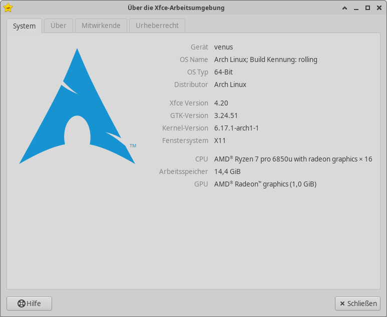

Zurück zu Arch
Mein Vorsatz, Ubuntu bis Ende Oktober zu nutzen, habe ich am Wochenende verworfen. Der Drang zu Wechseln war zu stark und es gab doch die ein oder andere Sache, die mich an Ubuntu gestört hat.
Was hat mich gestört?
Ubuntu verändert die Gnome-Oberfläche. Ich glaube, dass die Änderungen auch grundsätzlich für Gnome gut sind. Es gibt ein Tray und ein Dock. Damit sind wohl die beiden größten Kritikpunkte an Gnome in Ubuntu behoben. Aber ist euch schon einmal folgendes aufgefallen? Wenn das Dock am linken Bildschirmrand platziert ist (so wird es auch als Standardeinstellung installiert), dann ist die Uhr im oberen Panel nicht zentriert. Sie ist ein Stück nach rechts verrutscht. Und dann noch etwas… Wenn der Bildschirm entsperrt wird und eine Anwendung ist maximiert, muss das Fenster sich kurz “zurechtruckeln”. Ich glaube, dass der Windowmanager in Gnome zuerst die Fenster ohne Dock positionieren will. Dann wird das Dock wieder aktiviert und die Fenster müssen einmal neu in der Größe und Position angepasst werden. Mich hat das massiv gestört, dass die Fenster immer kurz sich bewegt haben. Eine weitere Sache, die ich nicht besonders mag (und hier geht es um persönlichen Geschmack) ist das Yaru-Theme. Gerade die helle Variante ist mir viel zu weiß. Und die Schrift ist viel zu dünn. Ich habe Probleme, die Schrift nach einiger Zeit gut zu lesen. Und dann gab es noch eine Sache, einen Bug. Aktuell können in der Version 25.10 keine Flatpaks aktualisiert oder installiert werden. Ich weiß, Canonical möchte gerne ihr eigenes Snap-Format forcieren. Dafür habe ich auch Verständnis. Aber Flatpak ist nun einmal in der Linuxwelt etabliert und sehr, sehr weit verbreitet. Viele Anwendungen gibt es als Flatpak und es ist einfach bequem. Soweit ich den Bug verstanden habe, liegt es an der Sicherheitseinrichtung AppAmor. Der Bug wurde sogar in der Beta-Phase gemeldet, aber nicht rechtzeitig zum Release behoben. Ich frage mich da schon, wo die Qualitätskontrolle ist und ob nicht gerade solch ein Bug noch hätte behoben werden müssen. Was mich noch gestört hat… die Snap-Version von Firefox. Auf meinem PC funktioniert die Hardwarebeschleunigung in Firefox nicht auf Anhieb. Ich habe in dem Computer eine recht neue AMD 9070XT Grafikkarte. Und ich vermute, dass die im Snap gebündelte Mesa-Version nicht mit dieser Grafikkarte funktioniert. Es gibt Tricks, wie man das lösen kann. Aber ist das nicht eigentlich der Sinn eines Snaps oder Flatpaks? Das benötigte Bibliotheken dann auch in einer entsprechend aktuellen Version enthalten sind? Ich hatte auch noch andere interessante Probleme mit dem Snap-Paket. Ab und zu hat mein Firefox scheinbar das Profil vergessen. Und ich durfte dann mich auf Webseiten neu anmelden. Und die letzte Sache, die mich gestört hat: Die Snap-Version hat keinen Zugriff auf das tmp-Verzeichnis. Das benötige ich ab und zu, da ich aus Emacs heraus die ein oder andere HTML-Seite exportieren und diese dann in tmp liegt. Die Probleme mit Firefox könnte ich lösen, wenn ich das Paket von Mozilla direkt installiere. Aber ich hatte auch einmal das Problem, dass trotz apt-pinning plötzlich wieder die Snap-Version installiert war. Also… ein System, welches meine Wünsche nicht beachtet, möchte ich nicht.
Es ist wieder Arch
Also habe ich am Samstag dann kurz entschlossen mir das ISO der Archinstallation auf einen USB-Stick geladen und dann Arch installiert. Ich habe nicht die komplette Hardcore-Installation durchgeführt und jeden Schritt einzeln mit Hilfe des Wiki abgearbeitet. Archinstall war mir schon eine große Hilfe, um zügig ein Basissystem auf dem Laptop zu haben. Das war nämlich der erste Computer, den ich umgestellt habe. Zuerst mit KDE. Aber ich habe mich dann doch für XFCE entschieden. Ich will erst einmal Wayland ein wenig fernbleiben und beobachte aus der Ferne, wie die Entwicklung da weiter geht (Fun Fact: KDE ist mir auf beiden Rechnern mehrmals beim Login eingefroren….).
XFCE… Retro oder was?
Für diejenigen, die nicht wissen, was XFCE ist… es ist eine sehr “alte” Desktopumgebung. Mit alt meine ich, sie sieht sehr klassisch aus und verhält sich auch sehr klassisch. Die Entwicklung findet nur sehr langsam statt, größere Versionen gibt es ca. alle zwei Jahre. Ich habe also eine sehr stabile, sich kaum verändernde grafische Benutzeroberfläche und als Unterbau ein Rolling Release-System. Das ist auch eine schräge Kombination. Aber mir gefällt XFCE… ich habe jetzt wieder Rofi als Launcher, virtuelle Desktops, kann die Dinge, die mir wichtig sind, einstellen. Und die Optik… ist mir egal.
Du wechselst doch eh bald wieder…
Ja… mag sein. Aber eigentlich frage ich mich… wohin??? Arch bietet eigentlich alles, was ich haben möchte. Es ist eine Community-geführte Distribution. Das gefällt mir schon einmal. Sie ist grundsätzlich sehr simpel aufgebaut. Das Wiki ist eine exzellente Quelle für die Konfiguration. Man muss nur wissen, was man haben möchte und wo man es im Wiki findet. Und dann läuft es. Ja… das System benötigt ein wenig Pflege. Man sollte schon regelmäßig Updates installieren, alte Pakete löschen und ab und zu die News auf der Arch-Homepage lesen. Aber ehrlich… das ist gar nicht so schlimm. Ich mag es so. Ein wenig muss ich vielleicht basteln. Aber es läuft schnell und ich verstehe, was ich hier mache. Und wenn etwas schief geht… auf beiden Systemen habe ich Snapshots eingerichtet. Ich kann also durchaus nach einem fehlerhaften Update einen älteren Stand booten und dann auf Fehlersuche gehen.
I use Arch, btw
Heute wird Ubuntu 25.10 veröffentlicht. Und ja… noch habe ich auf beiden Computern Ubuntu im Einsatz. Auf dem Laptop ist bereits 25.10 installiert und es läuft sehr unauffällig.
Es juckt aber in den Fingern wieder zu wechseln. Es bleibt spannend, ob ich bis Ende Oktober durchhalte ;-)
Ich muss meinen Führerschein tauschen
Diejenigen, die einen Führerschein haben, trifft es früher oder später. Wir dürfen den Führerschein austauschen. Ich habe mich jetzt darum gekümmert. Wobei… ich habe nur den ersten Schritt erledigt. Und das lässt mich schon wieder an der Digitalisierung von Behörden zweifeln.
Wer ist zuständig?
Erst einmal musste ich herausfinden, welche Führerscheinstelle eigentlich für mich zuständig ist. Ich wohne nicht mehr in dem Ort, in dem ich ursprünglich in jungen Jahren die Fahrerlaubnis erworben habe. Ein Blick auf die Homepage der “Fahrerlaubnisbehörde des Kreises Stormarn” hat mich in meiner Meinung bestätigt, die sind wohl zuständig. Immerhin steht es so auf der Homepage. Also schicke ich dort wohl alles hin.
Was muss ich eigentlich alles einreichen?
Eine gute Behörde liebt Papier. Die Homepage begrüßt einen förmlich mit einem PDF-Formular, welches man ausfüllen muss. Aber Obacht… hier ist schon die erste Falle… Die Fahrerlaubnisbehörde spricht vom Umtausch des alten Papierführerscheins in den “neuen” Kartenführerschein (den es nun auch schon seit 1999 gibt…). Das PDF, welches mir hier als Bürger angeboten wird, bezieht sich auf diesen Führerschein. Und dann noch gleich ein zweites PDF… für die Beantragung einer Übersendung eines Karteikartenabschnitts…. Karteikartenwas???? Ich ahne schon schlimmes. Die Personen, die noch einen Führerschein aus Papier haben, dürfen wohl bei der ursprünglichen Behörde (siehe oben… da wo man gewohnt hat, als man sich mit Fahrstunden und missgelaunten Prüfern abgequält hat) einen Antrag stellen, dass jemand aus einem verstaubten Holzkasten eine Karteikarte raussucht. Auf der steht dann hochoffiziell (also mit Stempel), dass man in dem Ort zu einer Zeit vor vielen Jahren eine Fahrerlaubnis erworben hat. Davon wird dann eine Abschrift (Fotokopie???) gemacht und an die zuständige Behörde (also in dem Kreis, in dem man wohnt) schickt…. uff… zumindest stelle ich mir das so vor. Aber das Gute… ich habe ja bereits einen EU-Führerschein. Mich betrifft das nicht. Die Suche geht weiter auf der Homepage. Denn auch, wenn vom Umtausch des unbefristeten EU-Führerschein in den neuen, befristeten gesprochen wird, ein passendes Antragsformular findet man nicht auf Anhieb. Ich suche also… und suche und finde dann etwas versteckt sehr viele weitere Formulare. Auch das gewünschte für den Austausch der Plastikkarte, die mich berechtigt ein KFZ zu fahren. Spannend…. Ich habe also ein PDF… immerhin kann ich es am Computer ausfüllen. Aber elektronisch übermitteln? Nein… bitte den Antrag per Post (das ist die Behörde mit den Posthörnern und Kutschen…) einreichen. Inklusive einem biometrischen Foto, einer Kopie des Ausweises und natürlich eine Kopie des alten Führerscheins. Zum Glück habe ich einen Drucker… sonst wäre das schwer geworden… Also Führerschein und Ausweiß abfotografieren und dann ausdrucken. Immerhin ist das Foto digital… Ich fühle mich weniger wie ein Höhlenmensch… Aber der tote Baum aus dem Drucker, der tut mir schon leid…. Aber wir sind ordentliche Bürger und die Behörden haben ihren Prozess. Und als Kanban-Liebhaber mag ich Prozesse. Ich habe also viel Papier mit Toner verschönert und auf dem Unterschriftblatt einen Krakel gemacht, der meine Unterschrift sein soll. Es fehlt das Foto.
Fotos gehen doch digital, oder?
Ein biometrisches Foto… ok… kein Problem… Also mit dem Smartphone ein Selfie geht wohl leider nicht. Die Behörde möchte auch ein physisches Foto. Und mein Drucker ist jetzt nicht überragend. Aber macht nichts, wir haben in Bargteheide wirklich noch eine Fotografin. Und dort kann man auch kurzfristig biometrische Fotos machen lassen. Das war heute. Ich bin kurz hin, die sehr nette Fotografin hat von mir drei Fotos gemacht. Wir haben das am wenigsten grimmig aussehende genommen, sie hat die Fotos ausgedruckt (zugegeben: auf einem echt guten Fotodrucker) und mir dann in die Hand gedrückt. Eines der Fotos habe ich dann auf dem Unterschriftblatt mit etwas Kleber fixiert. Damit die Behörde es dann gerade einscannen kann. Denn in mein Führerschein wird ja eine verkleinerte Version des Fotos gedruckt.
Und jetzt weg mit dem Antrag?
Alle Dokumente inklusive einem netten Anschreiben (das habe ich dann mal von einer KI schreiben lassen… Digitalisierung und so) sind jetzt in einem schicken B5-Umschlag. Adresse natürlich handgeschrieben, ich traue mich nicht den Umschlag durch den Drucker zu schicken. Die “Briefmarke” ist immerhin die Internetmarke der Post (das waren die mit der Kutsche). Also #PORTO und dann einen Code aus Buchstaben und Ziffern. Ich habe mich sehr modern gefühlt, als ich das mittels Stift auf den Umschlag schreiben durfte. Morgen werfe ich dann alles in einen Briefkasten, der hier schräg gegenüber steht. Dann bin ich gespannt, ob der Antrag auch klappt.
Da war doch sehr viel Digitalisierung im Spiel, oder?
Liebe Behörde… Ein PDF anzubieten hat nichts mit Digitalisierung zu tun. Mich zu zwingen ein physisches Foto erstellen zu lassen und auf ein Formular zu kleben erinnert mich ein wenig an die Bastelstunde in der Grundschule… Warum kann ich nicht alles wirklich digital über eure Homepage einreichen? Ich schicke euch jetzt Papier zu, dass ihr doch eh nur wieder einscannt… Mich wundern die 12 Wochen (!) Bearbeitungszeit keineswegs. Würde ich so bei mir in der Firma Anforderungen an die Entwicklung bearbeiten… ich wäre wohl meinen Job los. Bitte denkt Digitalisierung mal wirklich zu Ende. Und verdammt nochmal… schreibt auf eurer Homepage auch die korrekten Prozesse. Ich möchte nicht wissen, wie oft ihr am Tag angerufen werden, weil ein Bürger oder Bürgerin nicht versteht, was sie jetzt machen soll.
Alles wird gut
Naja… ich bin ja skeptisch, dass das alles funktioniert. Ich habe natürlich um die Übersendung des neuen Führerscheins an das Bürgerbüro in Bargteheide gebeten. Ich habe ja wenig vertrauen, dass das wirklich klappt. Aber ich halte euch auf dem Laufenden.

Ich spiele zur Zeit Stardew Valley
Ich gebe zu… ich bin ein Casual Gamer. Ich mag es nicht, wenn Spiele eine sehr komplizierte Mechanik haben oder ich besonders geschickt sein muss. Mich frustriert das eher und ich lege die Spiele sehr schnell wieder beiseite. Ein Spiel ist für mich gut, wenn es eine spannende Geschichte hat. Oder wenn ich stundenlang gemütlich einer Tätigkeit wie z. B. Angeln oder Bergbau nachgehen kann.
Auf der Switch habe ich sehr viel Animal Crossing gespielt. Und mit sehr viel meine ich ca. 300-400 Stunden. Also wenig im Gegensatz zu anderen Animal Crossing-Profis. Mein Ziel war es, das Museum zu füllen. Bis auf einige Kunstwerke habe ich mittlerweile alles zusammen. Da ich aber sonst in Animal Crossing alles für mich wichtige entdeckt habe, bin ich jetzt zu Stardew Valley übergegangen (welches ich auf dem PC bzw. Steamdeck spiele).
Ja… ich spiele zum ersten Mal richtig Stardew Valley. Mittlerweile habe ich das erste Jahr im Spiel hinter mir und es macht einfach Spaß. Es hat eine angenehme Lernkurve. Das Spiel führt einen sanft in die unfassbar große Vielfalt der Möglichkeiten ein. Und man merkt an jeder Ecke, dass der Entwickler wirklich viel Herzblut in dieses Spiel gesteckt hat.
Zu Beginn war ich eigentlich nur am Hof und an der Mine interessiert. Mittlerweile habe ich das Ende der Mine erreicht und bin jetzt dabei den Anbau der Pflanzen auszubauen. Eigentlich waren mir die NPCs im Dorf eher egal. Aber mittlerweile merke ich, dass mich auch die Geschichten der Figuren wirklich interessiert. Also laufe ich regelmäßig durch das Dorf, spreche mit jedem und schenke Gegenstände. Und das mache ich nur, um die nächste Sequenz der individuellen Geschichten zu erleben.
Ich bin gespannt, wie lange mich das Spiel noch fesseln wird. Aber gefühlt bin ich wohl immer noch am Anfang. Es gibt noch so viele Rätsel und Geheimnisse, zu entdecken. Wer ist der Zwerg in der Mine? Was hat es mit dem Zauberer auf sich? Wieso leben kleine, seltsame Wesen im Gemeindezentrum… und so viel mehr. Ich befürchte, das Spiel wird mich noch ein wenig länger beschäftigen… und dabei war eigentlich meine Idee, irgendwann mit Octopath Traveler zu beginnen. Dann muss das Spiel wohl noch etwas länger auf dem Pile of Shame liegen und warten.